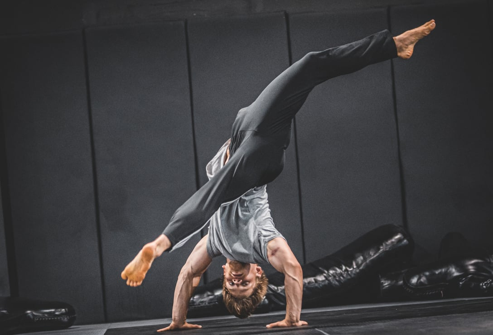
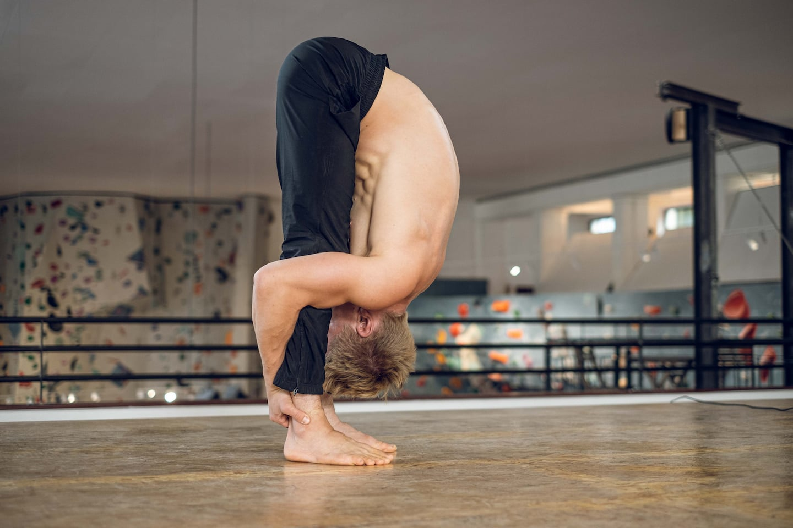
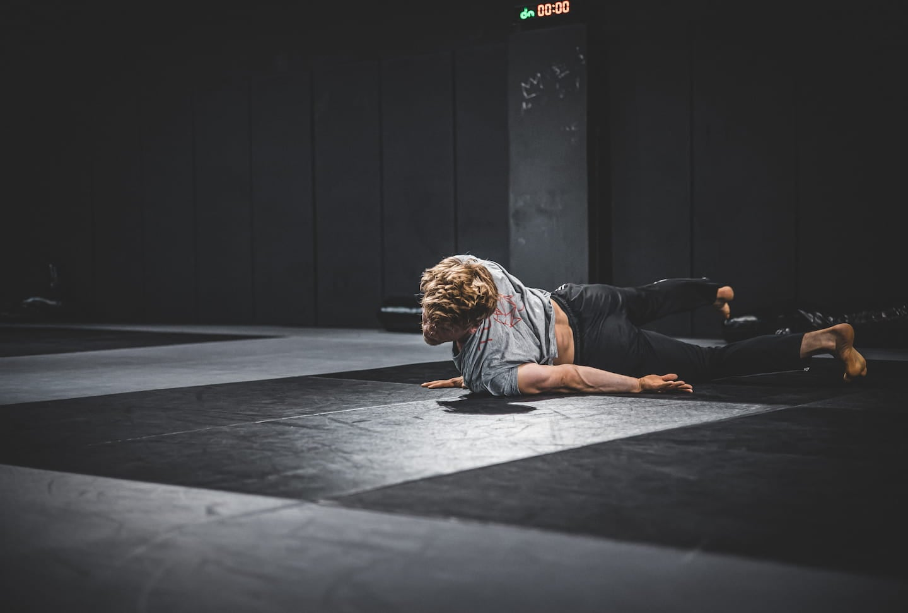
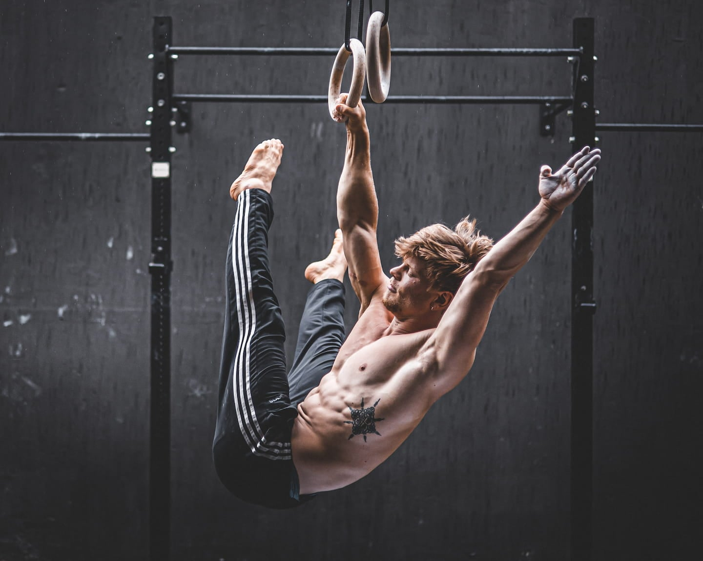
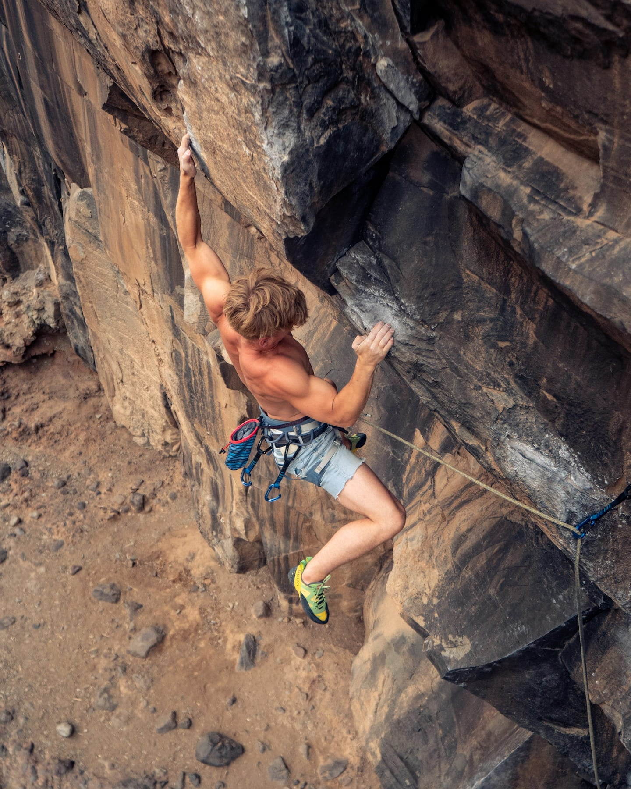
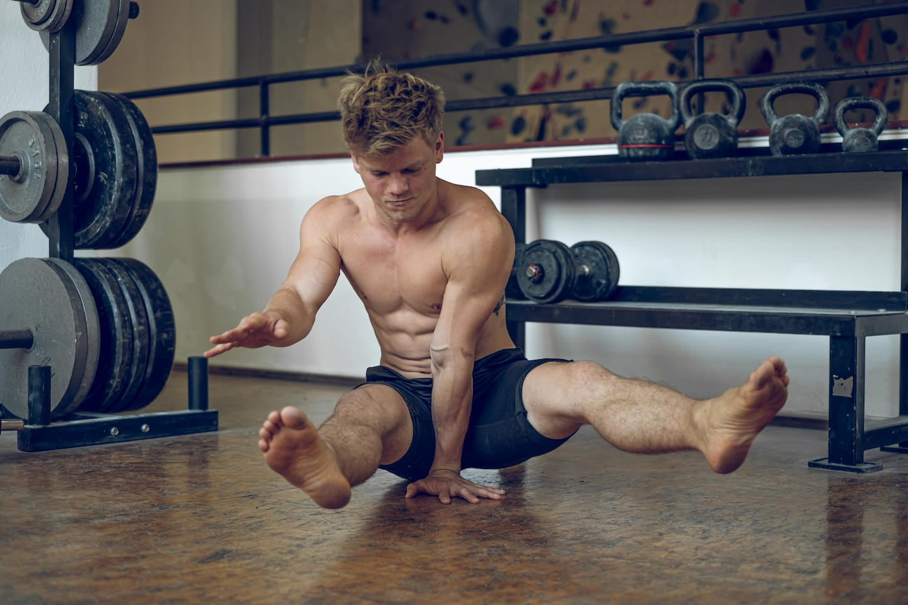

About us
About
About Lukas, Franziskus and their practice
Growing up in Berlin I early found my passion for movement. In the beginning, I mainly learned as an autodidact and when I thought I was too old already, I went to circus school, to train 5-8 hours per day. Soon, I realized I flourish making all sports things tangible and accessible for others and fell in love with teaching.
Now I work as a full-time teacher, acrobat, dancer, and mover. From time to time I fall in love with a specific movement topic and go nuts on it. I love to be in direct contact with people and experience the process together.
Fun fact: Physical strength is my weakness since I'm hypermobile in most of my body parts.
My practice
-

-

-

-

-

-

At first glance, it looks like I practice acrobatics, hand balance, dance, capoeira, functional training, calisthenics, weightlifting, climbing, bouldering, parkour, partner acrobatics, acro yoga, and all other possible sports. From my point of view, it’s all somehow the same.
Because to move is a craft. There might be this superficial layer of a lean, strong body, which can look aesthetic, but that doesn't necessarily mean that it is functional. Beneath we find things like agility, mobility, responsiveness, speed, and skills - like jumping over an obstacle, walking on hands, or climbing.
It is possible that we still need a specific setting to execute a handstand, and need to have the obstacle in a very specific position to be able to jump over it. It’s good while learning but it’s not realistic. In the real world: stepping on a stone on the street, an obstacle at the wrong moment, a ladder breaking when we take a step, picking up a child from the floor and so on. A craftsperson solves the chaos. It can train the physical intelligence, the body's endurance and strength and then learn how to solve physical problems within seconds, stay healthy, protect the ankles, and pick up the child without any back pain.
About person
Growing up in a small village in the Centre of Germany I had a very playful childhood. While trying a wide variety of sports I quickly learned that I did not care too much about competitive sports or mastering one discipline. Instead, a more diverse practice with elements from acrobatics caught my interest.
With a curiosity that was only matched by my impatience, I always tried to push my limits and learn new ways to move. Unfortunately, this quickly resulted in overuse injuries which in return fuelled my interest for anatomy and training theory.
After studying IT & Computer Linguistics I decided to follow my passion and became a full-time movement coach in Berlin.